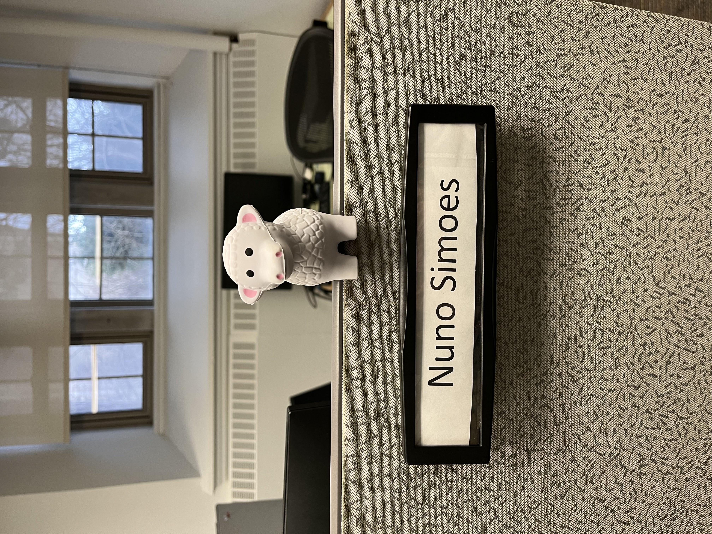
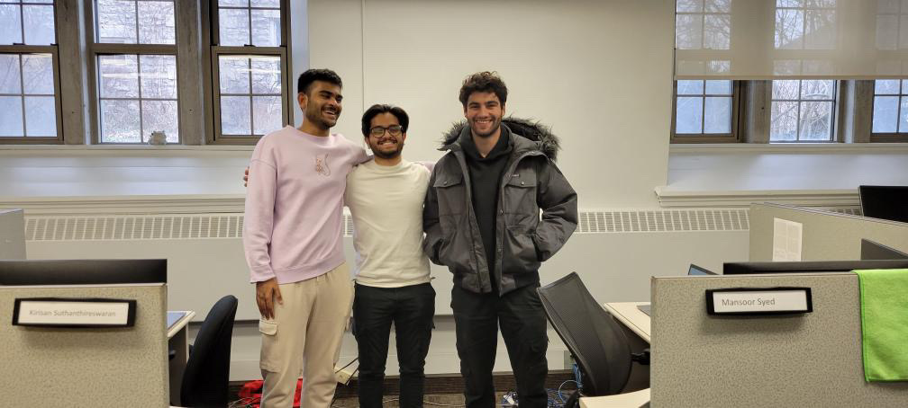

Introduction
For my first co-op work term I was hired as a Student IT Technician at the University of
Guelph's
Computing & Communications Services (CCS) department. The duration of this September 2023
- December 2023. This work term report summarizes my experiences during the 4 months
aswell as the goals I achieved during the work term

Information about the Employer
During this term I worked for the Computing and Communication Services (CCS) department at
the Univeristy of Guelph (UofG). More specifically, I worked for the Managed Desktops (MD)
team. This team provides technical support for all computers enrolled in the service
including software and hardware issues.
Interesting Facts
Managed Desktops manages over 10,000 computers under the UofG Domain
University of Guelph is the largest employer in Guelph
University of Guelph has seven colleges and three campuses
Job Description
I was hired as a Student IT Technician which is a very general term for what I did
during my work term. To start, advanced technical skills were not needed as I found it was
easy to learn on the job.
The skills that helped me most in this job were customer services skills to communicate
with customers, and time management as often times I was multi-tasking completing multiple
things at one time. My day-to-day varied alot ranging from writing documentation,
providing technical support, downloading software, and brainstorming ways to make our job
more efficent.
Goals
Oral Communication
Over the past few months, I have completed my goal of improving my oral communication
skills. I engaged with clients face-to-face to solve several IT problems. I made it a goal
of mine to always explain what I am doing to help them aswell as tips to avoid the problem
in the future. I was clear and concise when communicating with clients which earned me a
gold star for exceptional service.
Technological Literacy
As this was my first experience working full-time for a larger organization in an office
type setting I made it a goal of mine to improve my technological literacy. Especially in
Microsoft Office Suite applications, most large companies use some if not all of these
applications to streamline their operations. This term I was able to increase my
effeciency in various office applications such as Microsoft Excel, Teams, and Word.
Personal Organization
Throughout my 4 month co-op I was able to maintain a healthy work-life balance and
maintain productive throughtout the day, even outside of work. This term highlighted the
imporantace of hobbies outside of work for me. In the beginnning I found myself bored and
unsure what to do after work.. As the term went on and I organized my life a bit more I
learned I love to cook!
Conclusions
Overall, I consider this work-term a success from a career perspective aswell as a
personal perspecitive. Career-wise I gained my first full-time job experience in the
Tech/IT field and it helped me realize that this is the career path for me. I gained both
soft and hard skills that will help me in any future endeavorus that I may not have
developed if I didn't seek this opportunity. Personally, I met some of the nicest,
supporting, and hard working people that I get the luxury to now call my friends. I also
learned alot about myself like
that in my free time I love to cook and I am secretly a nutrition nerd!

Acknowledgements
I would like to give a special thanks to my supervisors Brian Thomson and Haniya Saleh for
giving me this opportunity and trusting in my abilities even when my experience in the IT
field was limited. I learned a lot throughout this 4-month work term and I wish them all
the
best aswell.
×